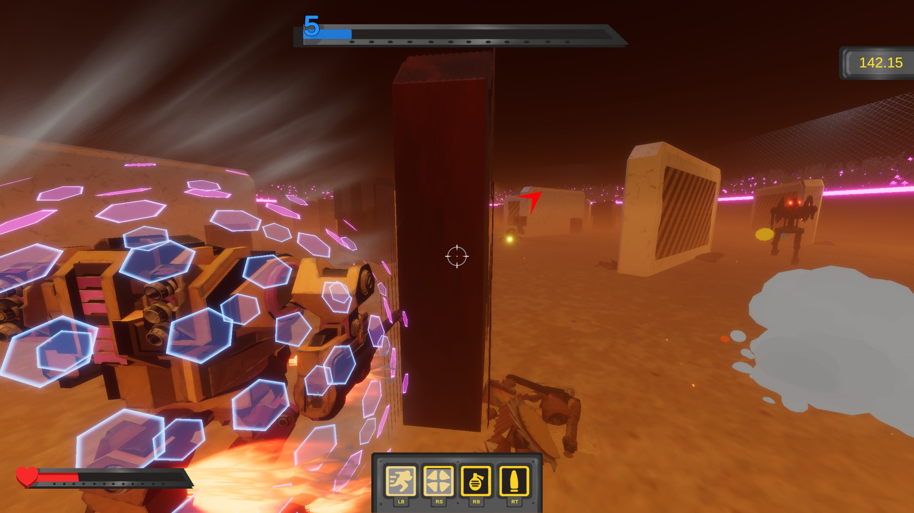
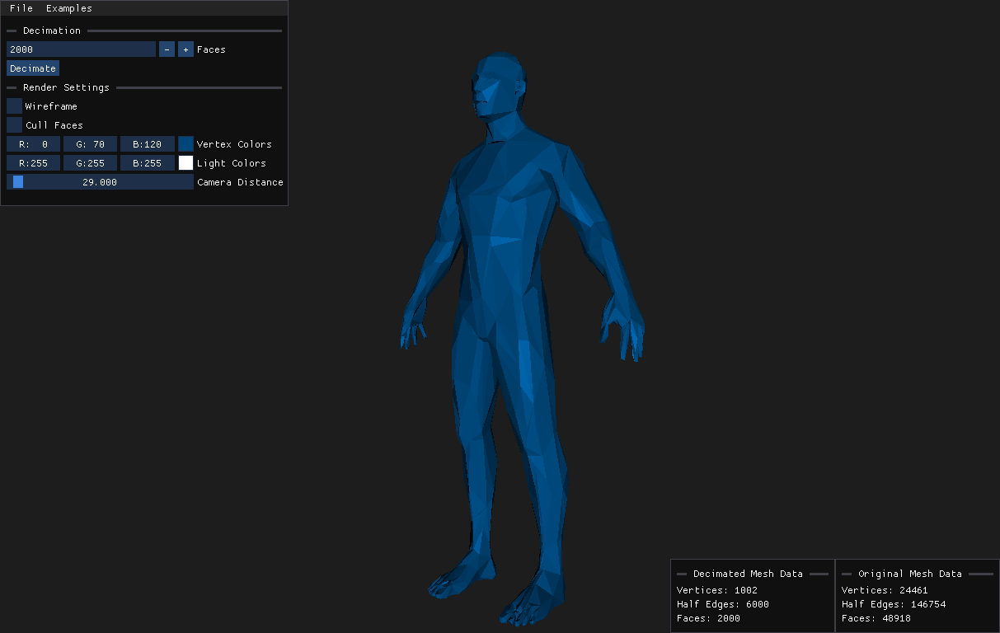
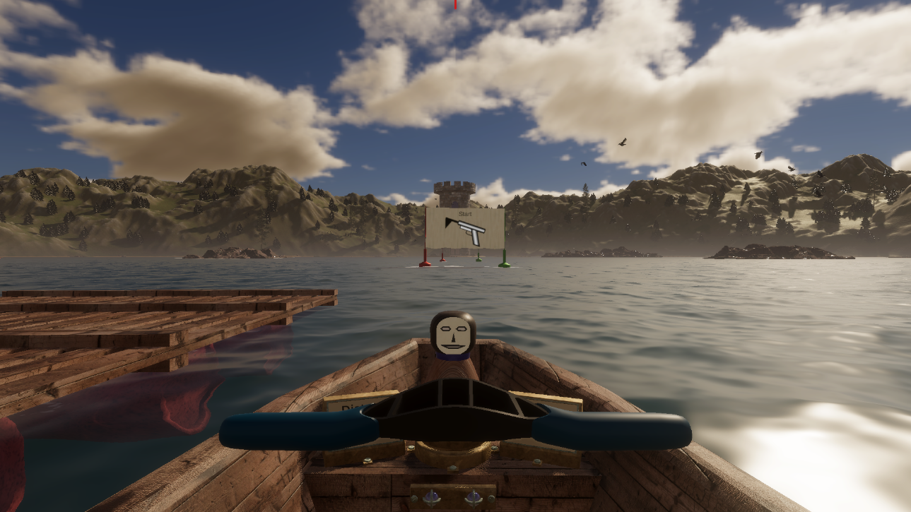
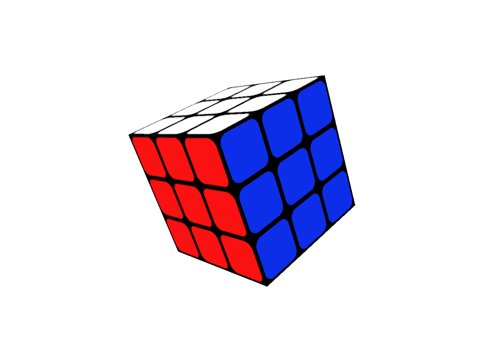
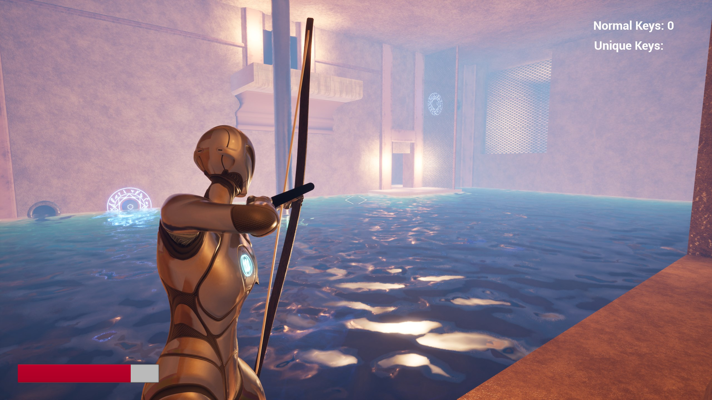
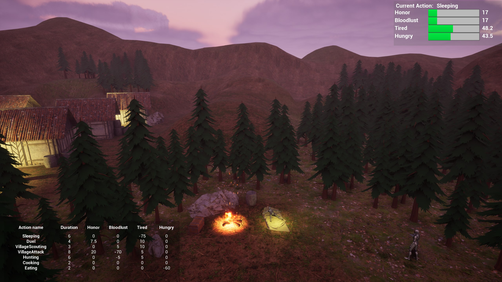

BOB - Battle of Bots
Unity
C#
Battle of Bots is a Third-Person-Shooter game where the player has to survive as long as he can against endless enemy waves. The game originated at the game jam "GDW Trier" and is now still in development.
More Details...

Mesh Decimation Tool
C++
OpenGL
The Mesh Decimation Tool can reduce the amount of faces of a mesh. The tool tries to reduce the faces without changing the shape of the mesh too much. The mesh can be imported as an OBJ file and the reduced mesh can also be exported as an OBJ File.
More Details...

Brain-Row Challenge VR Implementation
Unity
C#
VR
The game Brain-Row Challenge was developed by Prof. Dr. Christoph Lürig and I ported the game to VR. The game is a rowing simulater where the player needs to answer questions during the rowing. The game is played with a Concept 2 rowing machine.
More Details...

Rubiks Cube
C++
OpenGL
The Rubiks Cube is ... well a Rubiks Cube. The Rubiks Cube is completly coded in C++ and OpenGL with a few additional math libraries. The cube can be controlled with a mouse.
More Details...

Phiaro Prototype
Unreal Engine
Blueprints
Phiaro is an action and puzzle game. The prototype includes a few enemies to fight against and a small puzzle to reach the top of the main room. The player starts with sword/dagger and can find a bow in the level.
More Details...

Goal-Oriented-Behaviour
Unreal Engine
Blueprints
Goal Oriented Behaviour is a technique for the AI of NPCs. The NPCs decide what to do based on their needs. The demo shows this technique and the user can adjust the parameters during runtime to see how these affect the AI.
More Details...